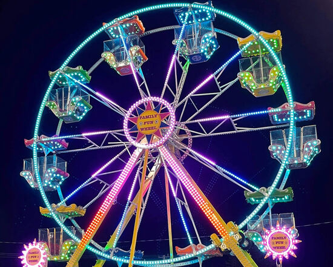

Index Walibi
Homepage
Leuke foto's
informatie pagina
Uitleg over de Reuzenrad van Walibi:
De reuzenrad van Walibi is 45 Meter hoog.
WOW!!
Je zit zo hoog dat je een heel mooi uitzicht hebt over heel het park. Dit is natuurlijk altijd het fijnst met lekker weer. Maar met wat regen en wind is het altijd net iets meer spannender